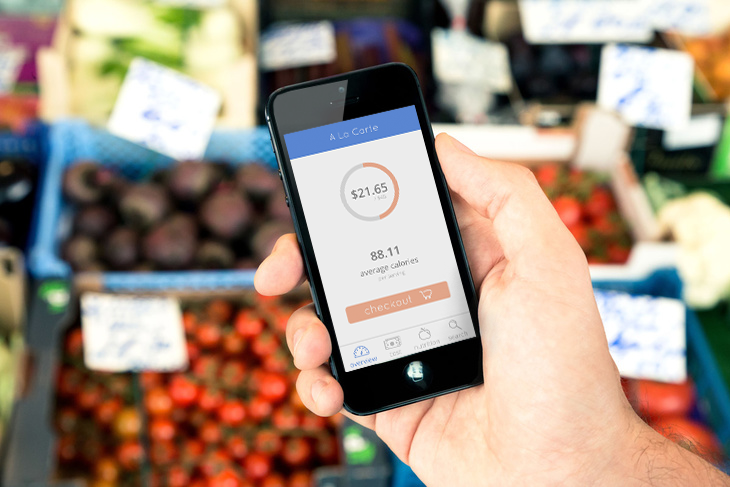
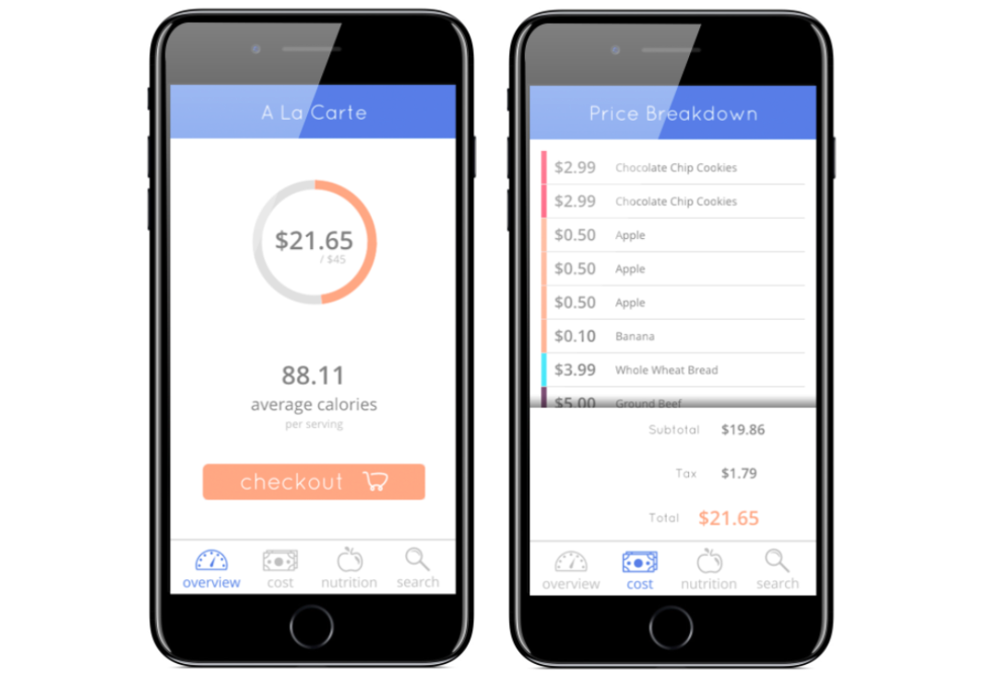
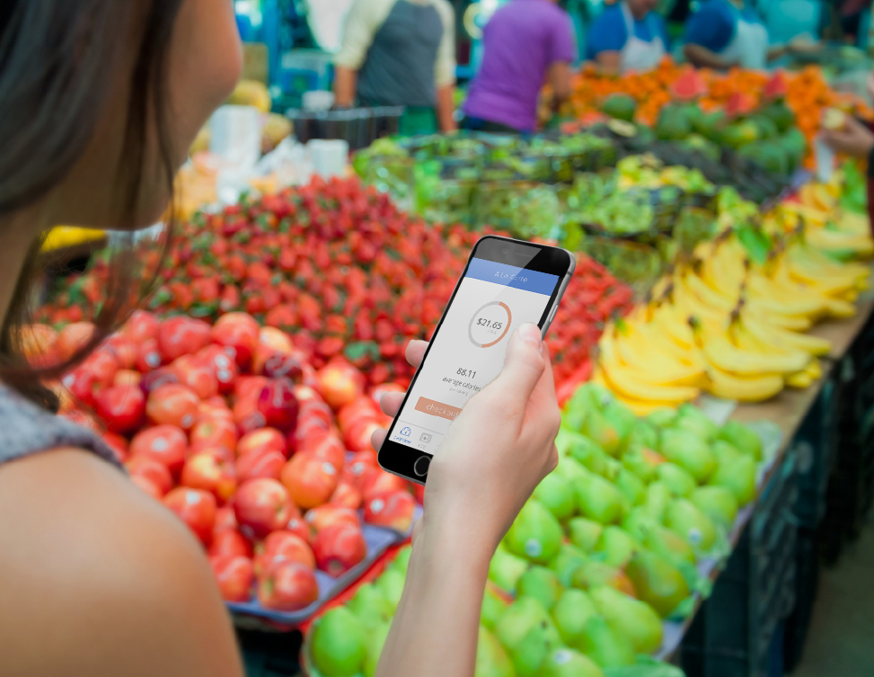
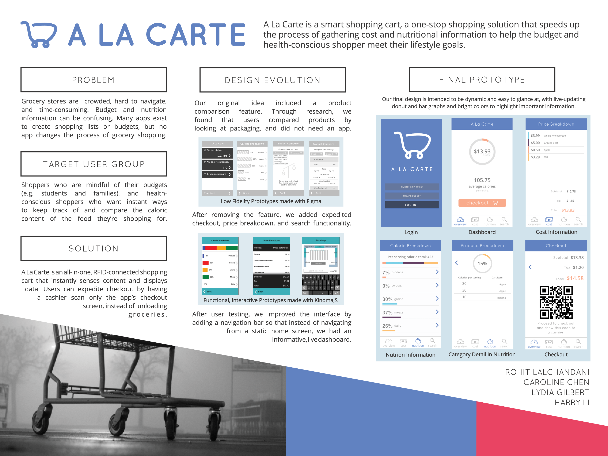

A La Carte is an RFID-connected shopping cart and companion app that helps grocery shoppers be more informed. This concept was created for Computer Science 160 - User Interface Design at UC Berkeley. Our team's Medium.com writeup explains the initial prototyping, user testing, and final product. I wrote the piece and created all the graphics, including the interface iterations, logo, and photographic mock-ups. We were very excited about this project and our work has since been shown to recent classes of CS160 as a great example to follow. Check out our write-up here!



